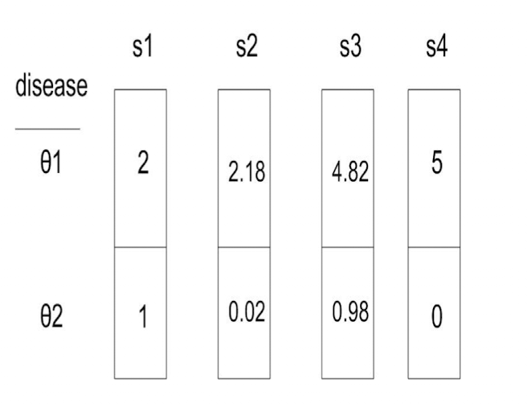

Chapter 1 - Strategies: Admissible, Minimax, Bayes
Questions:
Clarification on why we do expectation of losses.
How is a strategy, the same thing as an estimator? We want an estimator to estimate the true state of nature, however what \(s(X)\) or \(\hat{\theta}\) does is produce an action right?
Intuition of minimax in the disease, physician setting as compared to a game. Also explain slide 18.
When do we consider lower quantant and diagonal lower quantant?
Can we say that all minimax are Bayes?
Are all Bayes strategies admissible?
1. Kinds of Knowledge we can obtain from a problem with statistical uncertainty
Basic elements of a Statistical Problem
\(a \hspace{0.3 em} \epsilon \hspace{0.3 em} A\) where a is a single action belonging to the action space.
\(\theta \hspace{0.3 em} \epsilon \hspace{0.3 em} \Theta\) where \(\theta\) is a single parameter or state of nature that belongs to a parameter space.
\(l(\theta, a)\) is a consequence of taking action a when state of nature is \(\theta\) . i.e. given \(\theta\) (although maybe unknown) , when player performs an action what is the loss or gain? if $l(\theta, a) > 0 $ then it’s interpreted as loss occured to player. If \(< 0\) then gain.
Example
Suppose a physician(the player) sees a patient who may ( \(\theta = \theta_{1}\)) or may not (\(\theta = \theta_{2}\)) truly have a disease. The true state is unknown; based on the symptoms or some diagnostic test (estimator of the parameter), the physician should decide whether or not she should treat him. While doing so, careful consideration must be taken because the estimator may not be accurate which leads to losses. Say test here is indicated by $X$ . \(X = x_{1}\) if test suggests presence of disease, \(x_{2}\) otherwise.
- For e.g. , if the true state of \(\theta = \theta_{1}\), but your test result comes out \(x_{2}\), then that may worsen symptoms in a patient - incurring loss in a sense.
| Action | \(a_{1}\) = treatment | \(a_{2}\) = treatment |
|---|---|---|
| State of Nature | ||
| \(\theta_1\) = disease present | 2 | 5 |
| \(\theta_2\) = disease absent | 1 | 0 |
| Action | \(x_1\) = pos test | \(x_2\) = neg test |
|---|---|---|
| State of Nature | ||
| \(\theta_1\) = disease present | 0.94 | 0.06 |
| \(\theta_2\) = disease absent | 0.02 | 0.98 |
What are strategies \(( s(X) )\)/estimators \((\hat{\theta}(X)\)?
We want to have our actions be informed on data we observe.
A pure strategy \(s\) is a function from the data space \(\mathcal{X}\) to the action space \(A\).
i.e. for a pure strategy, the image of some $x_{i} $ can only be a unique action from \(A\).
\(s\) refers to a single strategy and \(S\) refers to a set of strategies.
Steps to calculate \(l(\theta, s)\) for a single strategy across all x’s:
1. Suppose our data space is, \(x_{1}, x_{2}\)
2. Our action space for strategy s, suppose is, \(a_{1}, a_{2}\) respectively.
3. Now, we know \(f(x_{1} | \theta_{1}), f(x_{1} | \theta_{2}), f(x_{2} | \theta_{1}), f(x_{2} | \theta_{1})\). (Say we know the distributions based on observations from the past).
- Then \(l(\theta_{1}, s(x_{1}))\) = \(l(\theta_{1}, a_1))\) (\(l\) indicates loss associated with an individual action).
- Similarly for other parameters and actions.
- Let $ s_{1}, s_{2}, s_{3}, s_{4} S $
What’s the difference between \(X\) and \(\mathcal{X}\) ? \(X\) is a random variable and \(\mathcal{X}\) is the space that contains all \(x_i\) a.k.a. the data space.
Since \(X\) is random, the function \(s(X)\) is also random.
Why are we interested in calculating \(L(\theta, s)\) in the form of \(E_{X}(l( \theta , s(X)) | \theta)\)?
Note that, here, \(l( \theta , s(X)) | \theta)\) is the loss incurred when taking the action \(s(X = x_{i})\) for a fixed \(\theta\)
Then \(E_{X}(l( \theta , s(X)) | \theta)\) is the expectation of these losses \(\forall\) \(X\) for a fixed $\theta$
So \(E_{X}(l( \theta , s(X)) | \theta)\) helps us summarize (across all \(X\)) the loss incurred by a strategy for a \(\theta\).
\[ E_{X}(l( \theta , s(X)) | \theta) = \sum_{i=1}^{n} f(x_{i} | \theta). l( \theta , s(x_{i})) | \theta) \]
Then \(L(\theta, s)\) = \(E_{X}(l( \theta , s(X)) | \theta)\) asks the question, how well does a strategy perform for a given \(\theta\)
However, if calculate \(L(\theta, s)\) as the median of \(l(\theta, s(X))\) across all \(X\) then, we’re only retaining information about one individual \(x_{i} \hspace{0.3 em} \epsilon \hspace{0.3 em} X\)
2. Admissible Strategies
Definition:
A strategy \(s(X)\) is inadmissible if \(\exists\) another strategy \(s'(X)\) s.t. \(L(\theta, s) >= L(\theta, s') \forall \theta\)
With at least one strict inequality.

In the above example, \(s_3\) is uniformly worse than $s_2$, i.e., it is inadmissible because, it \(L(\theta_1 , s3) > L(\theta_1 , s2)\) and \(L(\theta_2 , s3) > L(\theta_2 , s2)\) .Mixed/Randomized Strategies:
Going back to our four strategies, we can assign each one a probability. \(f(s_{1}), f(s_{2}) ...\)
Definition:
A randomized strategy is just a weighted sum of our pure strategies based on these probability distributions.
e.g. \(s* = \sum_{i=1}^{4}s_{i}. f(s_{i})\) is a mixed strategy.
Geometric Representation of Strategy Space Across States of Nature(Params)

On the right, we have our four pure strategies and their losses for each \(\theta\) .
On the left
x-coordinate = \(L(\theta_{1}, s)\)
y-coordinate = \(L(\theta_{2}, s)\)
A convex hull around the pink points then is the entire extended (i.e. including mixed) strategy space.
Example:
\(\forall \hspace{0.3 em} \lambda\hspace{0.3 em} \epsilon \hspace{0.3 em} [0,1] : \hspace{0.3 em}\lambda s_{1} + (1- \lambda)s_{2}\) is a mixed strategy that falls on the line connecting s1 and s2.
Given, \(L(s_{1}, \theta_{1})\) and \(L(s_{2}, \theta_{1})\), and for a given \(\lambda\) s.t. \(s* = λs_1+(1−λ)s_2\),
\[ L(s*, \theta_1) = \lambda s_{1} + (1 - \lambda) s_{2} \]
Heuristically speaking, admissible strategies always fall on the “south-west” border of the convex-hull. These are the strategies that are useful.
Closed “Lower Quantant” and Admissibility
Illustration of a Lower Quantant

**Definition:**
A lower quantant whose corner falls on the line x = y is a diagonal lower quantant.
**Result:**
A strategy \(s\) is admissible \(\iff\) the closed lower quantant (closed means including the border of the quantant) at s includes no other pt. from S.
Illustration of an Inadmissible vs. Admissible Strategy based on the lower quantant

Suppose the purple circle here is a convex hull of strategies \(S\). The lower quantant with its corner at \(s'\) clearly includes other pts in \(S\), hence, \(s'\) is inadmissible. The same is not true for \(s\).
3. Ordering Strategies
Minimax
Definition:
A minimax strategy \(s*\) is one that minimizes over strategies the maximum loss over states of nature.
Geometric interpretation of minimax strategies:
If there is a smallest diagonal-closed-lower-quantant among those that contact the convex hull \(S\) of those losses, then those points of contact are minimax strategies.

Bayes
Definition:
A Bayes strategy \(s_{\pi}\) is one that minimizes over all strategies the expected loss over a prior distribution \(\pi\) on the states of nature.
i.e., \(\forall i\) we have been given a prior distribution \(\theta_{i}\) .
- Say we have \(\theta_1\) and \(\theta_2\) then, we know \(f(\theta_1)\) = \(\pi\) and \(f(\theta_2)\) from past observations.
- For each strategy \(s\) in our convex hull, we can now calculate, \(\pi L(\theta_1, s) + (1- \pi) L(\theta_2, s)\) = expected loss over the prior dist.
- We can sort these strategies based on the above value and find \(s*\) with the smallest expected loss.
Geometric Representation of Bayes Strategy
Step 1: Find a strategy \(s\) in the convex hull.
Step 2: Compute \(\pi L(\theta_1, s) + (1- \pi) L(\theta_2, s)\) or \(\pi L_1 + (1- \pi) L_2\) for shorthand, say it’s equal to 3.
Step 3: Find all strategies for which \(\pi L_1 + (1- \pi) L_2\) = 3.
This is the eqn of a line \(\pi x + (1-\pi) y = 3\) or \(y = \frac{-\pi x}{1 - \pi} + 3\)
Step 4: The slope of this eqn then = \(\frac{-\pi }{1 - \pi}\)
Step 5: As you keep dialing down 3 to a smaller number you have a line with the same negative slope sweeping across the convex hull towards the south-west, until you reach the border of the convex hull. All strategies here are Bayes strategies for the given \(\pi\) .

Step 6: For a countable number of prior distributions you’ll be able to find multiple Bayes strategies which reside in the “south-west” border of the convex hull. The set of these Bayes strategies are admissible.
Bayes is not necessarily unique for a prior. There are many pts. on the edge of the convex hull that the Bayes slope can be tangential to for a given \(\pi\).
How to interpret different values of priors intuitively and geometrically:
Consider the following convex hull:
when \(\frac{\pi}{1 - \pi}\) > 5, our slope is almost fully vertical, as it move south-west, it ends up touching \(s_{1}\)
When \(\frac{\pi}{1 - \pi}\) < 0.007, slope is almost 0, and it ends up touching \(s_{4}\).
| Admissible | Minimax | Bayes |
|---|---|---|
| We have no prior dist of \(\Theta\) | We have no prior dist of \(\Theta\) | Defined w.r.t. prior |
| But all admissible strategies are Bayes w.r.t. some prior(may be unknown) | Since all minimax strategies are admissible, they are also Bayes. | |
| Can intersect with any “closed lower quadrant” | Can only intersect with **smallest “diagonal** closed lower quadrant” |
Different types of losses we’ve seen before and what’s the Bayes estimator that minimizes these:
Mean Squared error loss:
\[ E[(\theta - \hat{\theta})^{2}] = Var(\theta - \hat{\theta}) + E[(\theta - \hat{\theta})]^{2} \\ = Var(\hat{\theta}) + E[(\theta - \hat{\theta})]^{2} \]
When \(\hat{\theta}\) is unbiased, i.e., \(E[\hat{\theta}] = \theta\) then,
\[ MSE = E[(\theta - \hat{\theta})^{2}] = Var(\hat{\theta}) + 0 \]
Here, your Bayes estimator will be the mean of the posterior distribution.
Absolute Error Loss: \(| \theta - \hat{\theta}|\)
Bayes estimator will the median of the posterior distribution.
For a normal posterior, the mean and the median are the same \(\implies\) both types of losses have the same Bayes estimator.
How to find the Bayes estimator in general?
You’ll have to make assumptions on:
the loss function L(\(\theta\), s)
the prior dist: \(\pi(\theta)\)
the likelihood: \(p(X | \theta)\)
Bayes estimator minimizes \(E[L(\theta, s(X) | X]\) i.e. here \(X\) is fixed and we’re averaging \(L(\theta, s)\) over all \(\theta\) ’s .
\(E[L(\theta, s(X) | X] = \sum_{\theta}L(\theta, s) p(\theta|X)\) incase of discrete \(\theta\)
We’ll repeat this process for all possible outcomes of \(X\) .
Then we can say \(S_{bayes}\) minimizes \(\sum_{X}E[L(\theta, s(X) | X].p(X)\) since we’re minimizing the terms piece-wise.